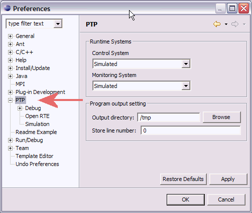
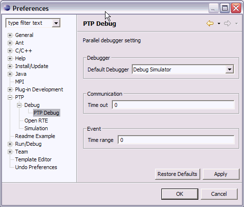
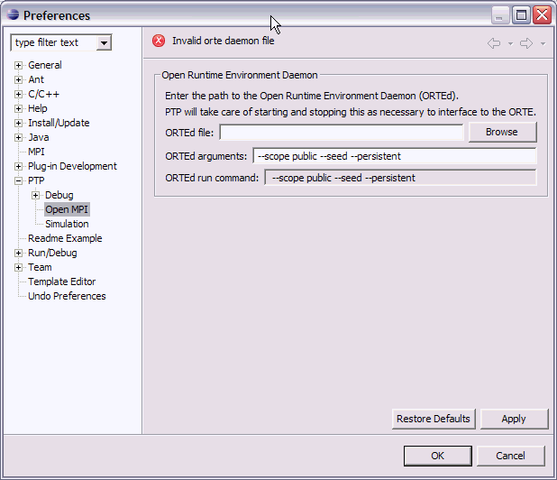

To open the Preferences window, select Window > Preferences... Then select 'PTP' in the list of preferences pages on the left side.
The main page has Runtime Preferences. Runtime systems will eventually let you select between different types of external runtimes (e.g. Open MPI, MPICH, etc.) We have separated control and monitoring for situations where the runtime does not provide both services (e.g. MPICH). At the moment you can only choose 'Open Runtime Environment' or 'Simulated'.

Debug Preferences - (PTP->Debug) Main Debug preferences page. These are preferences that apply to any debugger. 'Show full paths on breakpoint' will use the full path to the source file when displayed in the debugger Breakpoint View. 'Register process 0 by default' will register process 0 with the Debug View when the parallel debugger starts. Otherwise no processes will be registered.
PTP Debug Preferences - (PTP -> Debug -> PTP Debug)
These are
Preferences specific to the PTP debugger.
'Default Debugger' will select the parallel debugger to use.
[Currently not functioning.]
[Other preferences are not currently used.]

PTP->Open RTE: Preferences specific to the Open Runtime Environment. 'Open Runtime Environment Daemon' specifies the location of the Open Runtime Environment daemon and the arguments that will be supplied to the daemon. The run command is the command that will eventually be run and is read-only. 'Open Runtime Environment PTP Proxy Server' specifies the location and port number to use for the Open RTE proxy server, which is used for remote job launch and monitoring of system and job status. These preferences do not normally need to be changed.

PTP->Simulation : Simulator preferences - for more information, see Launching the simulator.